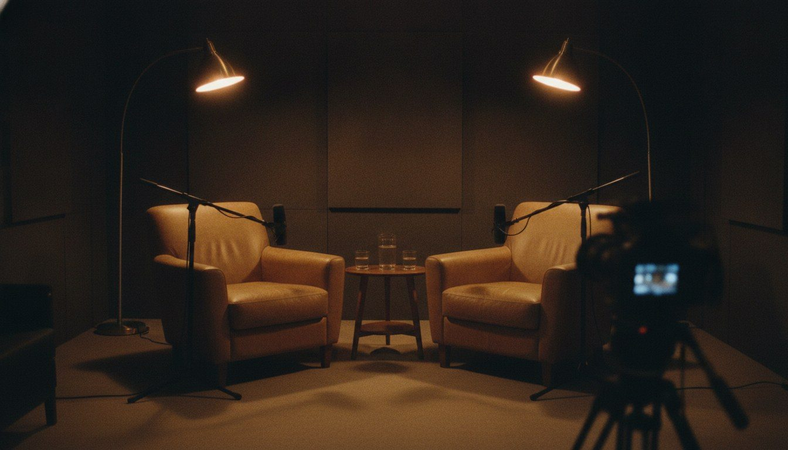
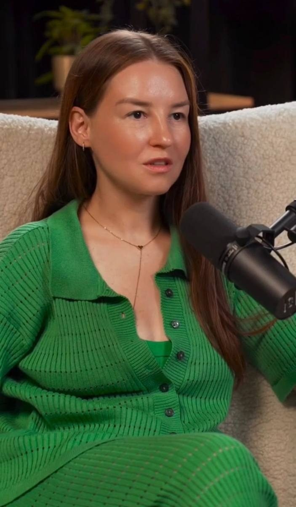
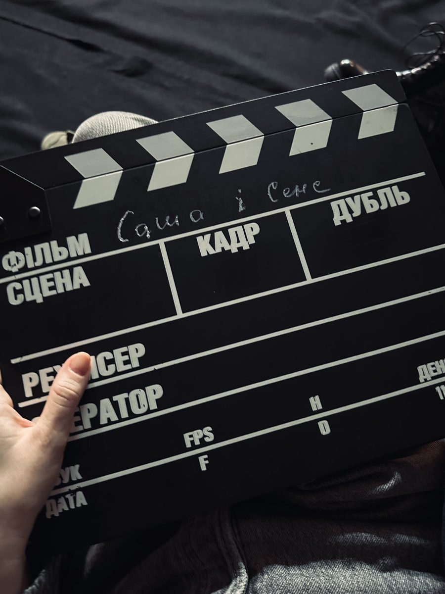

Формую ваш медійний образ і заводжу за руку в подкасти.
Туди, де вас почують ті, хто готовий купувати. А потім перетворюю ці розмови на клієнтів.
Для експерток і власниць бізнесу, у яких уже є продукт і дохід. Шлях до впізнаваності займає від 6 місяців, і ми проходимо його разом.
Або напишіть «ПОДКАСТ» у дірект Instagram. За 30 хвилин підберемо подкаст під вашу аудиторію.

Чому саме подкаст
Рілс показує, що ви існуєте. Розмова показує, хто ви.
Образ можна будувати в Instagram, на YouTube чи на будь-якій іншій площадці. Довіру, за яку платять, дає довга розмова.
Стільки в середньому дивляться один випуск «Саша і Сенс», у «Поза Формулами» — 22 хвилини. За цей час людина чує, як ви думаєте, і встигає вам повірити. У рілса на це кілька секунд.
Аудиторія роками довіряє ведучому. Коли він кличе вас у студію і ставить вам запитання, частина цієї довіри стає вашою з першої хвилини.
YouTube — це пошукова система. Випуск «Саша і Сенс», що вийшов у грудні 2025-го, через пів року набрав за три місяці ще чверть своїх переглядів. Випуск приводить людей, поки ви працюєте.
Після години з вами людина знає ваш голос, ваші історії й ваш підхід. На дзвінку вона вже питає, коли почати.
З одного випуску виходить серія коротких роликів для Reels, TikTok і Shorts. Вони приводять людей, а повний випуск робить їх вашими клієнтами.
Тому YouTube у вашій стратегії обов'язковий: за глибиною люди йдуть саме туди.
Куди я можу вас завести
Перегляди YouTube: типовий випуск — рекордний.
Як я працюю
Від образу до клієнтів
Образ
Розпаковую, про що ви і якою вас мають бачити: опори, 5 історій, 3 тези. Збираємо образ до першого запису.
Підготовка
Проходимо кожне інтерв'ю заздалегідь: що розповісти, як відповісти на незручне, як звучати й виглядати, куди покликати людей наприкінці.
Подкасти
Заводжу в подкасти й медіа під вашу аудиторію, тему і мову. Домовляюся там, куди вас самих не пустять. Преса, події й колаборації, коли є привід.
Клієнти
До виходу випуску готуємо сторінку: мова, шапка, лід-магніт, промокод. Через 7 і 30 днів показую, скільки людей прийшло і скільки купило.
2–3 зустрічі: образ, історії, тези, сторінка-візитка для подкастів.
Щомісяця 1–2 подкасти, підготовка, преса за приводом, звіт.
Чому я

Підприємиця. 8 років я будувала Pushka School: 11 000 випускників із 39 країн, віртуальний показ на Riga Fashion Week. Школу продала. Тому дивлюся на ваше інтерв'ю як на продаж.
Продюсерка. Подкаст «Саша і Сенс» за 8 місяців виріс з 5 000 до 43 700 підписників без жодної гривні на рекламу. Я знаю зсередини, якого гостя чекає ведучий.
Партнерка подкастів. Веду партнерства 5 подкастів із брендами, тому ведучі довіряють гостям, яких я рекомендую.
Брендів у моїй базі. Для вас це колаборації і спільні проєкти з брендами, коли ваш образ уже готовий.
«Смілива». Стільки дівчат-підлітків у 7 містах пройшли мій соціальний проєкт під парасолею фонду Маші Єфросиніної.
Преса · натисніть, щоб відкрити статтю
Riga Fashion Week
Ukrainian Fashion Week і PUSHKA Fashionverse
Vogue UA · Marie Claire · Insider UA · The Icon · Royal Design · УНІАН · The Page · Woman Magazine
Безкоштовні курси 3D-одягу
Vogue UA · Marie Claire · 24 канал · L'Officiel · НВ · Buro 24/7
Don't Take Fake · телебачення
DTF Magazine · лекторій DTF 2018 · Новий канал · шоу «Профешн»
